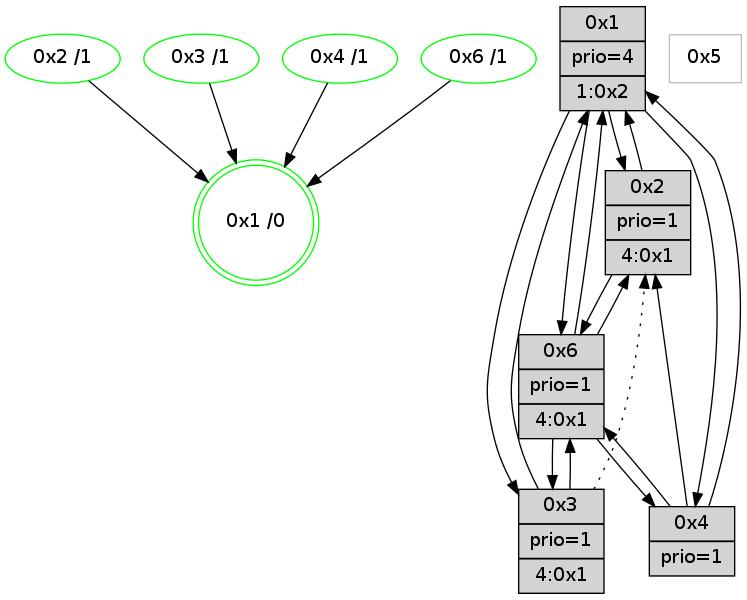

>> << IDX [start] -100 -25 -5 +0 +5 +25 +100 [785.062155008]
 Previous packets
----------------------------------------------------------------------
780.141070 beacon01(adaf) #0 coord=01,02,05,03,04,06 cycle=432.0ms assoc
-- color-indic=1 64 81 a6
780.151031 beacon02(adaf) #0 coord=01,02,05,03,04,06 cycle=432.0ms assoc 64 d0 59
780.161033 beacon05(adaf) #0 coord=01,02,05,03,04,06 cycle=432.0ms assoc 64 76 73
780.171031 beacon03(adaf) #0 coord=01,02,05,03,04,06 cycle=432.0ms assoc 64 ea 57
780.181032 beacon04(adaf) #0 coord=01,02,05,03,04,06 cycle=432.0ms assoc 64 4c 7d
780.191033 beacon06(adaf) #0 coord=01,02,05,03,04,06 cycle=432.0ms assoc 64 38 61
780.202790 [Hello(6): seq=497 sym=3,4,1,2 sysInfo=hasWarning,coloring-mode-on,ColoringModeIndicationCalled stat=3:9,9,8,1/4:2,8,0,0/1:1,9,13,1/2:10,7,3,2]
780.205581 [Color(1) seq=10 @0:0 prio=4 >1.@2,1.@3,1.@6]
----------------------------------------------------------------------
780.633178 beacon01(adaf) #0 coord=01,02,05,03,04,06 cycle=432.0ms assoc
-- color-indic=1 64 cd 16
780.643139 beacon02(adaf) #0 coord=01,02,05,03,04,06 cycle=432.0ms assoc 64 9c e9
780.653139 beacon05(adaf) #0 coord=01,02,05,03,04,06 cycle=432.0ms assoc 64 3a c3
780.663141 beacon03(adaf) #0 coord=01,02,05,03,04,06 cycle=432.0ms assoc 64 a6 e7
780.673140 beacon04(adaf) #0 coord=01,02,05,03,04,06 cycle=432.0ms assoc 64 00 cd
780.683140 beacon06(adaf) #0 coord=01,02,05,03,04,06 cycle=432.0ms assoc 64 74 d1
780.695613 [Hello(1): seq=483 sym=2,3,4,6 sysInfo=hasWarning,coloring-mode-on,ColoringModeRequestCalled stat=2:3,9,4,2/3:11,6,8,1/4:1,7,2,0/6:12,4,4,3]
780.699610 [Hello(4): seq=584 sym=6,1,2 sym= sysInfo=hasWarning,coloring-mode-on,ColoringModeIndicationCalled stat=]
780.701449 [Hello(3): seq=582 sym=1,6 asym=2,4 sysInfo=hasWarning,coloring-mode-on,ColoringModeIndicationCalled stat=1:14,11,9,1/6:15,2,8,9/2:2,4,1,0/4:1,4,0,0]
780.704664 [Color(3) seq=10 @0:0 prio=1 >4.@1,1.@2,1.@6]
780.706935 [Color(4) seq=10 @0:0 prio=1]
780.711130 [Hello(2): seq=1074 sym=6,1 sysInfo=coloring-mode-on,ColoringModeIndicationCalled stat=6:5,0,1,3/1:13,11,12,1]
780.713696 [Color(2) seq=10 @0:0 prio=1]
----------------------------------------------------------------------
781.125285 beacon01(adaf) #0 coord=01,02,05,03,04,06 cycle=432.0ms assoc
-- color-indic=1 64 09 79
781.135246 beacon02(adaf) #0 coord=01,02,05,03,04,06 cycle=432.0ms assoc 64 58 86
781.145247 beacon05(adaf) #0 coord=01,02,05,03,04,06 cycle=432.0ms assoc 64 fe ac
781.155247 beacon03(adaf) #0 coord=01,02,05,03,04,06 cycle=432.0ms assoc 64 62 88
781.165248 beacon04(adaf) #0 coord=01,02,05,03,04,06 cycle=432.0ms assoc 64 c4 a2
781.175247 beacon06(adaf) #0 coord=01,02,05,03,04,06 cycle=432.0ms assoc 64 b0 be
781.186999 [Hello(6): seq=498 sym=3,4,1,2 sysInfo=hasWarning,coloring-mode-on,ColoringModeIndicationCalled stat=3:10,10,8,1/4:3,9,0,0/1:1,10,13,1/2:11,8,3,2]
781.189054 [Color(1) seq=11 @0:0 prio=4 >1.@2,1.@3,1.@6]
----------------------------------------------------------------------
781.617394 beacon01(adaf) #0 coord=01,02,05,03,04,06 cycle=432.0ms assoc
-- color-indic=1 64 71 d4
781.627355 beacon02(adaf) #0 coord=01,02,05,03,04,06 cycle=432.0ms assoc 64 20 2b
781.637355 beacon05(adaf) #0 coord=01,02,05,03,04,06 cycle=432.0ms assoc 64 86 01
781.647355 beacon03(adaf) #0 coord=01,02,05,03,04,06 cycle=432.0ms assoc 64 1a 25
781.657355 beacon04(adaf) #0 coord=01,02,05,03,04,06 cycle=432.0ms assoc 64 bc 0f
781.667357 beacon06(adaf) #0 coord=01,02,05,03,04,06 cycle=432.0ms assoc 64 c8 13
781.679819 [Color(6) seq=11 @0:0 prio=1 >4.@1,1.@2,1.@3]
781.683824 [Hello(4): seq=585 sym=6,1,2 sysInfo=hasWarning,coloring-mode-on,ColoringModeIndicationCalled stat=6:1,0,5,10/1:0,12,13,1/2:3,6,1,0]
781.685615 [Hello(3): seq=583 sym=1,6 asym=2,4 sysInfo=hasWarning,coloring-mode-on,ColoringModeIndicationCalled stat=1:14,12,9,1/6:0,2,8,9/2:3,5,1,0/4:1,5,0,0]
781.687494 [Color(4) seq=11 @0:0 prio=1]
781.689446 [Hello(2): seq=1075 sym=6,1 sysInfo=coloring-mode-on,ColoringModeIndicationCalled stat=6:6,0,1,3/1:13,12,12,1]
781.692015 [Color(2) seq=11 @0:0 prio=1]
781.694322 [Hello(1): seq=484 sym=2,3,4 sysInfo=hasWarning,coloring-mode-on,ColoringModeRequestCalled stat=2:4,10,4,2/3:12,7,8,1/4:2,8,2,0]
781.698591 [STC(1) #0.58 new-neigh,tree-change,stable,to-color d=0]
781.704068 [Color(3) seq=11 @0:0 prio=1 >4.@1,1.@2,1.@6]
----------------------------------------------------------------------
782.109502 beacon01(adaf) #0 coord=01,02,05,03,04,06 cycle=432.0ms assoc
-- color-indic=1 64 b5 bb
782.119463 beacon02(adaf) #0 coord=01,02,05,03,04,06 cycle=432.0ms assoc 64 e4 44
782.129463 beacon05(adaf) #0 coord=01,02,05,03,04,06 cycle=432.0ms assoc 64 42 6e
782.139464 beacon03(adaf) #0 coord=01,02,05,03,04,06 cycle=432.0ms assoc 64 de 4a
782.149464 beacon04(adaf) #0 coord=01,02,05,03,04,06 cycle=432.0ms assoc 64 78 60
782.159463 beacon06(adaf) #0 coord=01,02,05,03,04,06 cycle=432.0ms assoc 64 0c 7c
782.171081 [STC(4)->1 #0.58 new-neigh,tree-change,stable,to-color d=1]
782.174814 [Color(1) seq=12 @0:0 prio=4 >1.@2,1.@3,1.@6]
782.176862 [Hello(6): seq=499 sym=3,4,1,2 sysInfo=hasWarning,coloring-mode-on,ColoringModeIndicationCalled stat=3:11,11,8,1/4:4,10,0,0/1:2,11,14,1/2:12,9,3,2]
782.179989 [STC(6)->1 #0.58 new-neigh,tree-change,stable,to-color d=1]
----------------------------------------------------------------------
782.601610 beacon01(adaf) #0 coord=01,02,05,03,04,06 cycle=432.0ms assoc
-- color-indic=1 64 f9 0b
782.611571 beacon02(adaf) #0 coord=01,02,05,03,04,06 cycle=432.0ms assoc 64 a8 f4
782.621572 beacon05(adaf) #0 coord=01,02,05,03,04,06 cycle=432.0ms assoc 64 0e de
782.631570 beacon03(adaf) #0 coord=01,02,05,03,04,06 cycle=432.0ms assoc 64 92 fa
782.641572 beacon04(adaf) #0 coord=01,02,05,03,04,06 cycle=432.0ms assoc 64 34 d0
782.651572 beacon06(adaf) #0 coord=01,02,05,03,04,06 cycle=432.0ms assoc 64 40 cc
782.664042 [Color(6) seq=12 @0:0 prio=1 >4.@1,1.@2,1.@3]
782.668035 [Hello(4): seq=586 sym=6,1,2 sysInfo=hasWarning,coloring-mode-on,ColoringModeIndicationCalled stat=6:2,0,6,10/1:1,13,14,1/2:4,7,1,0]
782.669849 [Hello(3): seq=584 sym=1,6 asym=2,4 sysInfo=hasWarning,coloring-mode-on,ColoringModeIndicationCalled stat=1:14,13,9,1/6:1,2,9,9/2:3,5,1,0/4:1,6,1,0]
782.671706 [Color(4) seq=12 @0:0 prio=1]
782.673657 [Hello(2): seq=1076 sym=6,1 sysInfo=coloring-mode-on,ColoringModeIndicationCalled stat=6:7,0,2,3/1:14,13,13,1]
782.675518 [Hello(1): seq=485 sym=2,3,4,6 sysInfo=hasWarning,coloring-mode-on,ColoringModeRequestCalled stat=2:4,10,4,2/3:12,8,8,1/4:2,8,2,0/6:0,0,1,0]
782.679560 [Color(2) seq=12 @0:0 prio=1]
782.683338 [Color(3) seq=12 @0:0 prio=1 >4.@1,1.@2,1.@6]
----------------------------------------------------------------------
783.093717 beacon01(adaf) #0 coord=01,02,05,03,04,06 cycle=432.0ms assoc
-- color-indic=1 64 3d 64
783.103678 beacon02(adaf) #0 coord=01,02,05,03,04,06 cycle=432.0ms assoc 64 6c 9b
783.113679 beacon05(adaf) #0 coord=01,02,05,03,04,06 cycle=432.0ms assoc 64 ca b1
783.123680 beacon03(adaf) #0 coord=01,02,05,03,04,06 cycle=432.0ms assoc 64 56 95
783.133680 beacon04(adaf) #0 coord=01,02,05,03,04,06 cycle=432.0ms assoc 64 f0 bf
783.143679 beacon06(adaf) #0 coord=01,02,05,03,04,06 cycle=432.0ms assoc 64 84 a3
783.155404 [Hello(6): seq=500 sym=3,4,1,2 sysInfo=hasWarning,coloring-mode-on,ColoringModeIndicationCalled stat=3:12,12,8,1/4:5,11,0,0/1:3,11,14,1/2:13,10,3,2]
783.159867 [Color(1) seq=13 @0:0 prio=4 >1.@2,1.@3,1.@6]
----------------------------------------------------------------------
783.585828 beacon01(adaf) #0 coord=01,02,05,03,04,06 cycle=432.0ms assoc
-- color-indic=1 64 70 63
783.595790 beacon02(adaf) #0 coord=01,02,05,03,04,06 cycle=432.0ms assoc 64 21 9c
783.605789 beacon05(adaf) #0 coord=01,02,05,03,04,06 cycle=432.0ms assoc 64 87 b6
783.615789 beacon03(adaf) #0 coord=01,02,05,03,04,06 cycle=432.0ms assoc 64 1b 92
783.625790 beacon04(adaf) #0 coord=01,02,05,03,04,06 cycle=432.0ms assoc 64 bd b8
783.635790 beacon06(adaf) #0 coord=01,02,05,03,04,06 cycle=432.0ms assoc 64 c9 a4
783.647630 [Hello(1): seq=486 sym=2,3,4,6 sysInfo=hasWarning,coloring-mode-on,ColoringModeRequestCalled stat=2:4,11,4,2/3:12,9,8,1/4:2,8,2,0/6:0,0,1,0]
783.650308 [Hello(2): seq=1077 sym=6,1 sysInfo=coloring-mode-on,ColoringModeIndicationCalled stat=6:8,0,2,3/1:14,14,13,1]
783.652253 [Hello(4): seq=587 sym=6,1,2 sysInfo=hasWarning,coloring-mode-on,ColoringModeIndicationCalled stat=6:3,0,6,10/1:2,14,14,1/2:5,8,1,0]
783.654930 [Color(2) seq=13 @0:0 prio=1]
783.657298 [Color(6) seq=13 @0:0 prio=1 >4.@1,1.@2,1.@3]
783.658901 [Color(3) seq=13 @0:0 prio=1 >4.@1,1.@2,1.@6]
783.665472 [Color(4) seq=13 @0:0 prio=1]
----------------------------------------------------------------------
784.077936 beacon01(adaf) #0 coord=01,02,05,03,04,06 cycle=432.0ms assoc
-- color-indic=1 64 b4 0c
784.087897 beacon02(adaf) #0 coord=01,02,05,03,04,06 cycle=432.0ms assoc 64 e5 f3
784.097897 beacon05(adaf) #0 coord=01,02,05,03,04,06 cycle=432.0ms assoc 64 43 d9
784.107898 beacon03(adaf) #0 coord=01,02,05,03,04,06 cycle=432.0ms assoc 64 df fd
784.117900 beacon04(adaf) #0 coord=01,02,05,03,04,06 cycle=432.0ms assoc 64 79 d7
784.127898 beacon06(adaf) #0 coord=01,02,05,03,04,06 cycle=432.0ms assoc 64 0d cb
784.139638 [Hello(6): seq=501 sym=3,4,1,2 sysInfo=hasWarning,coloring-mode-on,ColoringModeIndicationCalled stat=3:12,13,8,1/4:5,12,0,0/1:3,12,14,1/2:13,10,3,2]
784.144826 [STC(1) #0.59 new-neigh,tree-change,stable,to-color d=0]
784.148388 [Color(1) seq=14 @0:0 prio=4 >1.@2,1.@3,1.@6]
----------------------------------------------------------------------
784.570046 beacon01(adaf) #0 coord=01,02,05,03,04,06 cycle=432.0ms assoc
-- color-indic=1 64 f8 bc
784.580008 beacon02(adaf) #0 coord=01,02,05,03,04,06 cycle=432.0ms assoc 64 a9 43
784.590007 beacon05(adaf) #0 coord=01,02,05,03,04,06 cycle=432.0ms assoc 64 0f 69
784.600007 beacon03(adaf) #0 coord=01,02,05,03,04,06 cycle=432.0ms assoc 64 93 4d
784.610008 beacon04(adaf) #0 coord=01,02,05,03,04,06 cycle=432.0ms assoc 64 35 67
784.620008 beacon06(adaf) #0 coord=01,02,05,03,04,06 cycle=432.0ms assoc 64 41 7b
784.632727 [STC(6)->1 #0.59 new-neigh,tree-change,stable,to-color d=1]
784.635318 [Color(6) seq=14 @0:0 prio=1 >4.@1,1.@2,1.@3]
784.637016 [Hello(2): seq=1078 sym=6,1 sysInfo=coloring-mode-on,ColoringModeIndicationCalled stat=6:9,1,2,3/1:15,15,14,1]
784.640551 [STC(2)->1 #0.59 new-neigh,tree-change,stable,to-color d=1]
784.642115 [Hello(4): seq=588 sym=6,1,2 sysInfo=hasWarning,coloring-mode-on,ColoringModeIndicationCalled stat=6:4,0,6,10/1:2,15,15,1/2:5,8,1,0]
784.643930 [Color(2) seq=14 @0:0 prio=1 >4.@1,1.@3,1.@4,1.@6]
784.648072 [Hello(3): seq=586 sym=1,6 asym=2 sysInfo=hasWarning,coloring-mode-on,ColoringModeIndicationCalled stat=1:15,15,10,1/6:3,2,9,9/2:3,5,1,0]
784.650818 [STC(3)->1 #0.59 new-neigh,tree-change,stable,to-color d=1]
784.652392 [Hello(1): seq=487 sym=2,3,4,6 sysInfo=hasWarning,coloring-mode-on,ColoringModeRequestCalled stat=2:5,12,4,2/3:12,10,8,1/4:3,9,2,0/6:0,1,1,0]
784.654689 [Color(3) seq=14 @0:0 prio=1 >4.@1,1.@2,1.@6]
784.656561 [STC(4)->1 #0.59 new-neigh,tree-change,stable,to-color d=1]
784.659468 [Color(4) seq=14 @0:0 prio=1]